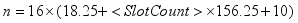
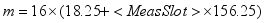

FETCh:GSM:MEAS<i>:MEValuation:TRACe:PVTime:CURRent?
FETCh:GSM:MEAS<i>:MEValuation:TRACe:PVTime:AVERage?
FETCh:GSM:MEAS<i>:MEValuation:TRACe:PVTime:MINimum?
FETCh:GSM:MEAS<i>:MEValuation:TRACe:PVTime:MAXimum?
READ:GSM:MEAS<i>:MEValuation:TRACe:PVTime:CURRent?
READ:GSM:MEAS<i>:MEValuation:TRACe:PVTime:AVERage?
READ:GSM:MEAS<i>:MEValuation:TRACe:PVTime:MINimum?
Returns the values of the power vs. time traces. 16 results are available for each symbol period of the measured slots (

The first sample of the "Measurement Slot" is at position m in the trace, where:

The results of the current, average minimum and maximum traces can be retrieved.
| Return values: | ||||||
| <Reliability> | ||||||
| <Result_1> ... <Result_n> |
| |||||
| Usage: | Query only | |||||
| Firmware/Software: | V1.0.0.4 | |||||
For additional information concerning syntax elements and returned values, refer to "Conventions and General Information".